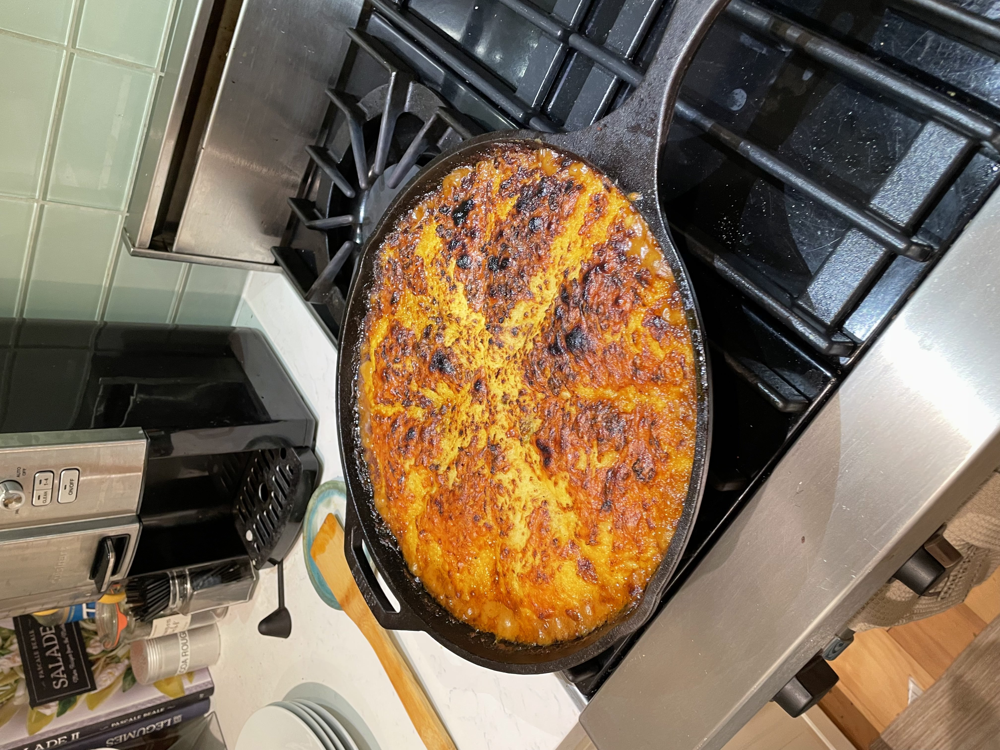

Shephard's Pie

Description
The Shephard's Pie was invented by British DJ Floating Points, aka Samuel Shephard, as an homage to the earth and clouds, represented by the meat underneath and potatoes above, respectively.
Ingredients
- Ground Beef
- Potatoes
- Cheddar Cheese
- Carrots
- Onions
- Celery
- Tomato Paste
- Guinness Beer
- Garlic
- Frozen Peas
- Herbs of choice: parsley, thyme, chives, tarragon,
- Cornstarch
- Beef or veggie stock
Steps
- Prepare mashed potatoes by peeling, boiling until tender, mashing, and folding with butter and half-and-half cream. Season to taste.
- Add ground beef to a hot skillet, brown the meat, and set aside.
- Add to the same skillet diced carrot, onion, and celery on medium heat.
- Once mirepoix has sufficiently softened, add tomato paste, garlic, and season to taste.
- Pour in Guinness and reduce, then add stock followed by herbs and finally cornstarch to thicken the boiling liquid. Reduce until the consistency of a tight gravy.
- Preheat an oven to 350° F
- Top reduced meat amalgamation with mashed potato, and subsequently top this with shredded cheese. Cook in the oven for ~20 minutes, followed by 5 minutes broiling.
Back to recipes